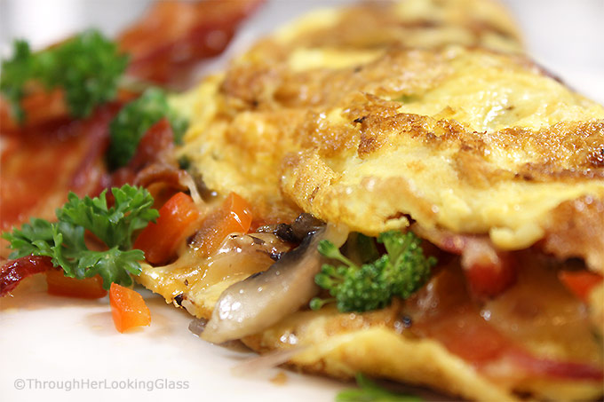

The Garlic Lovers' Mushroom Cheese Omelette

Description
In my opinion, there's nothing more perfect than the trifecta of eggs, cheese and mushrooms. Now just add garlic and it's an absolute party in the mouth.
As usual, feel free to alter this recipe however you like with your preferred trifecta of ingredients.
Ingredients
- 2 large eggs
- shredded mozzarella cheese
- 1 shallot
- 3 cremini mushrooms
- garlic butter
- 1 spring onion
- 2 cloves garlic
Steps
- Slice garlic, shallots, and mushrooms. Stir fry together in a pan with some oil. Add salt and pepper.
- While ingredients are cooking, beat the eggs in a bowl and season with salt and pepper. Chop the spring onion and beat that in as well.
- Remove garlic, shallots and mushrooms from pan once cooked. Add a pat of garlic butter. Pour beat eggs in and swirl to spread out a layer of cooked egg on pan.
- Once outside of egg is fried and inside is still slightly runny, add the stir fried ingredients back into the pan. Bunch them in the middle of the egg layer so that there's a line of ingredients with empty egg space on either side. Add shredded cheese on top.
- Use a spatula to fold one empty side of the egg layer over the ingredients. Wedge the spatula under the folded side and flip it over so that the omelette closes and the open flaps of the omelette are pressed against the pan.
- After a minute, you can turn off the flame and plate your beautiful omelette.